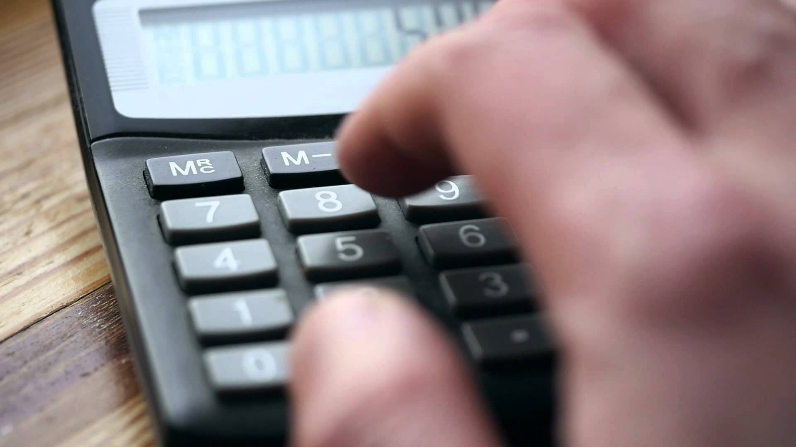

Click to read about the calculator
Couple of reasons to use calculator
3 Reasons to Teach Calculator Skills to Upper Elementary Students So why should we teach upper elementary students how to use a calculator? Based on my own experiences and feedback from other teachers, I am convinced that calculators boost mathematical thinking and are motivating to students. Here are 6 reasons to teach calculator skills and to encourage your students to use them to solve math problems.
1. Calculators help kids overcome computational limitations. Kids often have the conceptual understanding to solve problems that are much more difficult than their computational ability would allow. For example, a student might know they need to divide a 2-digit number by another 2-digit number, but if he or she hasn't mastered this skill, the answer will be out of reach without a calculator. Overcoming computational limitations is especially helpful for special needs students and actually removes barriers to more advanced levels of math instruction.
2. Calculators encourage the use of multiple strategies. Being able to use a calculator frees students to consider and test out a wide variety of problem solving strategies in a short time. They can solve a problem using one strategy (without or without a calculator), and check their answers using a different strategy.
3. Calculators help kids solve more problems in less time. Calculators allow students to work more quickly, which means they can solve more problems in a given time. So you can increase the number and complexity of the problems you introduce in each lesson without increasing the time devoted to problem solving lessons.
Future of the calculator
There’s no letting up. If time is going to advance to 100 years from now, the calculator is going to walk with it without ceasing to undergo regular improvements along the way. Give the credit to those who tinker with unthinkable ideas about the future of calculators. Voice-operated At the moment, the computer lacks HD and user-friendly features. The masters of Science and Technology are looking at calculators that can be activated and operated by voice. Someday, there will be no more fingers that stumble over tiny number and function keys. With voice operations, every calculation will be precise and done in no time. Advanced Networking System Tomorrow’s calculators will be wired, but with far more advanced functionality for the wiring. They will be wired for information sharing, much like the idea of a professor sharing the answer with his students through his calculator. The teacher has the option of linear sharing, that is to share information with one student only, or multi-point sharing, where one receives what his classmates receive. The sharing function is to be turned off during exams to discourage cheating. Wi-Fi connection service will be enhanced to serve this purpose.
ACTION HISTORY
{{historyStr}}
NUMBER OF ACTIONS
{{actionsCounter}}